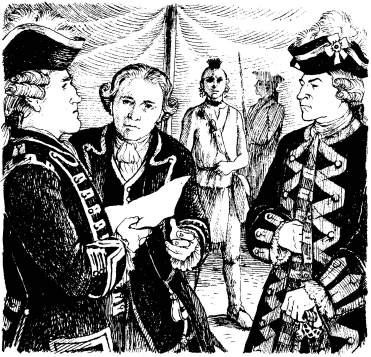

6
‘Khi nào viện trợ sẽ đến?’
Nhiều ngày trôi qua. Quân đội Pháp bắn đại bác vào Pháo đài William Henry. Nhiều binh lính Anh thiệt mạng. Tướng Munro chờ đợi. Nhưng Tướng Webb không gửi quân đến. Munro phái Hawk-eye đến Pháo đài Edward với một bức thư.
Tướng Webb đưa Hawk-eye một lá thư gửi cho Munro. Người trinh sát bắt đầu quay trở lại Pháo đài William Henry. Nhưng những người lính Pháp đã chặn anh ta lại. Họ lấy bức thư. Họ trói tay Hawk-eye bằng dây thừng.
Sáng hôm sau, Duncan Heyward đang đứng bên cổng Pháo đài William Henry. Anh thấy có ba người đàn ông tiến về phía pháo đài. Anh đến gặp Tướng Munro.
‘Tướng Munro,’ anh nói. ‘Hai người lính Pháp đang ở cổng pháo đài. Hawk-eye đi cùng họ. Nhưng khi nào viện trợ sẽ đến từ Pháo đài Edward?’
Hawk-eye bước vào phòng của Tướng Munro.

‘Tướng Webb đã đưa cho tôi một lá thư để trao cho ngài,’ anh ta nói. ‘Nhưng những người lính Pháp đã lấy mất. Tướng Montcalm muốn nói chuyện với ngài. Ngài phải đến trại của ông ta.’
Một sĩ quan Pháp gặp Munro và Duncan ở cổng pháo đài. Họ đến lều của Tướng Montcalm trong trại quân Pháp.
Có các sĩ quan Pháp và tù trưởng của người da đỏ trong lều. Sau đó, Duncan nhìn thấy Magua. Magua đang chiến đấu cho người Pháp! Người Huron nhìn Duncan và mỉm cười.
Montcalm nói trước. Ông ta nói với Munro.
‘Ông đã chiến đấu tốt, Tướng quân,’ ông ta nói. ‘Nhưng giờ ông phải dừng lại.’
Montcalm trao một lá thư cho Munro. Munro đọc nhanh lá thư. Sau đó, ông đưa nó cho Duncan. Lá thư là của Tướng Webb.


Munro nhìn Duncan. Họ không nói gì.
Sau đó, Tướng Montcalm nói với Munro. ‘Ông và những người lính của mình phải rời khỏi Pháo đài William Henry,’ ông ta nói. ‘Ông có thể mang theo súng của mình. Nhưng đừng mang theo đạn. Những người đàn ông, phụ nữ và trẻ em của ông sẽ được an toàn. Nhưng chúng tôi sẽ đốt cháy pháo đài.’
Tướng Munro không vui. ‘Chúng tôi sẽ đi vào sáng ngày mai,’ ông ấy nói. Sau đó, ông ấy và Duncan quay trở lại pháo đài.
Magua giận dữ. Hắn nói với các tù trưởng Huron. ‘Người Anh sẽ rời khỏi pháo đài. Người Pháp sẽ không giết họ. Nhưng người Anh là kẻ thù của người Huron. Chúng ta sẽ giết người Anh!’

Ba nghìn người Anh – gồm binh lính, phụ nữ và trẻ em – rời khỏi pháo đài. Họ vượt qua những người lính Pháp và đi về phía khu rừng. Những người lính Anh mang theo súng. Nhưng họ không có đạn.
Magua và những người Huron đang đứng trong rừng. Họ theo dõi Pháo đài William Henry. Người Anh rời khỏi pháo đài và đi vào khu rừng. Sau đó, hai nghìn người da đỏ tấn công!
Người Anh không thể chiến đấu. Họ không có đạn trong súng. Nhiều người Anh đã thiệt mạng.
Alice và Cora thấy cha của họ. Ông ấy đang chạy về phía trại quân Pháp. Ông ấy sẽ tìm Montcalm. Ông ấy sẽ yêu cầu được giúp đỡ.
‘Cha! Cha ơi!’ Alice hét lên. ‘Chúng con ở đây!’
Nhưng Munro không nghe thấy họ. Ông ấy không dừng lại.
Magua đang quan sát. Hắn chạy đến chỗ Cora. ‘Cô sẽ đi cùng tôi bây giờ chứ?’ hắn ta nói.
‘Không bao giờ!’ Cora nói. ‘Tôi sẽ không trở thành vợ anh.’
Người Huron nhìn cô. Nhưng hắn không nói gì. Sau đó, hắn quay sang Alice. Hắn giữ tay Alice. Hắn kéo cô về phía một con ngựa.
‘Dừng lại!’ Cora hét lên. Và cô chạy theo họ.
Magua đặt Alice lên ngựa. Sau đó, hắn cũng đặt Cora lên ngựa. Người Huron đưa họ đi trên một con đường về phía Hồ Horican.
Mục lục
- Bìa
- Tiêu đề
- Mục lục
- Lưu ý về tác giả
- Lưu ý về truyện
- Nhân vật trong truyện
- 1 Hai chị em gái
- 2 Lạc trong rừng
- 3 Cuộc giao tranh tại thác Glenn
- 4 “Tôi là tù trưởng người Huron”
- 5 Pháo đài William Henry
- 6 "Khi nào viện binh mới đến
- 7 Con đường mòn
- 8 Thầy thuốc
- 9 Trong ngôi làng của người Huron
- 10 Con gấu
- 11 Trưởng lão
- 12 Người Mohican cuối cùng
- Bản quyền